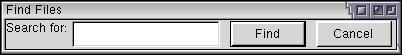

Input Controls
XUL has elements that are similar to the HTML form controls.
Text Entry Fields
HTML has an input element which can be used for text entry controls. XUL has a similar element, textbox, used for text entry fields. Without any attributes, the textbox element creates a box in which the user can enter text. Textboxes accept many of the same attributes as HTML input controls. The following are some of them:
- idA unique identifier so that you can identify the textbox.
- classThe style class of the textbox.
- valueIf you want the textbox to have default text, supply it with the value attribute.
- disabledSet to true to have text entry disabled.
- typeYou can set this attribute to the special value password to create a textbox that hides what it types. This is usually used for password entry fields.
- maxlengthThe maximum number of characters that the textbox allows.
Note that while in HTML, several different kinds of fields can be created with the input element, in XUL there are separate elements for each type. The following example shows some textboxes:
Example 2.4.1: Source View<label control="some-text" value="Enter some text"/> <textbox id="some-text"/> <label control="some-password" value="Enter a password"/> <textbox id="some-password" type="password" maxlength="8"/>
The textbox examples above will create text inputs that can only be used for entering one line of text. HTML also has a textarea element for creating a larger text entry area. In XUL, you can use the textbox element for this purpose as well -- two separate elements are not necessary. If you set the multiline attribute to true, the text entry field will display mutliple rows.
For example:
Example 2.4.2: Source View<textbox multiline="true"
value="This is some text that could wrap onto multiple lines."/>Like the HTML textarea, you can use the rows and cols attributes to set the size. This should be set to the number of rows and columns of characters to display.
Let's add a search entry field to the find file dialog. We'll use the textbox element.
<label value="Search for:" control="find-text"/>
<textbox id="find-text"/>
<button id="find-button" label="Find"/>Add these lines before the buttons we created in the last section. If you open this window, you will see something much like that shown in the image below.
 Notice that the label and the text input field have now appeared in the window. The textbox is fully functional and you can type into it and select text. Note that the control attribute has been used so that the textbox is selected when the label is clicked.
Checkboxes and Radio Buttons
Two additional elements are used for creating check boxes and radio buttons. They are variations of buttons. The checkbox is used for options that can be enabled or disabled. Radio buttons can be used for a similar purpose when there are a set of them where only one can be selected at once.
You can use most of the same attributes on checkboxes and radio buttons as with buttons. The example below shows some simple checkboxes and radio buttons.
<checkbox id="case-sensitive" checked="true" label="Case sensitive"/> <radio id="orange" label="Orange"/> <radio id="violet" selected="true" label="Violet"/> <radio id="yellow" label="Yellow"/>
The first line creates a simple checkbox. When the user clicks the checkbox, it switches between checked and unchecked. The checked attribute can be used to indicate the default state. You should set this to either true or false. The label attribute can be used to assign a label that will appear beside the check box. For radio buttons, you should use the selected attribute instead of the checked attribute. Set it to true to have a radio button selected by default, or leave it out for other radio buttons.
In order to group radio buttons together, you need to use the radiogroup element. Only one of the radio buttons in a radio group can be selected at once. Clicking one will turn off all of the others in the same group. The following example demonstrates this.
Example 2.4.3: Source View<radiogroup> <radio id="orange" label="Orange"/> <radio id="violet" selected="true" label="Violet"/> <radio id="yellow" label="Yellow"/> </radiogroup>
Like buttons, check boxes and radio buttons are made up of a label and an image, where the image switches between checked and unchecked when it is pressed. Check boxes have many of the same attributes as buttons:
- labelThe label on the check box or radio button.
- disabledSet this to either true or false to disable or enable the check box or radio button.
- accesskeyThe shortcut key that can be used to select the element. The letter specified is usually drawn underlined in the label.
(Next) In the next section, we will look at some elements for creating list boxes.